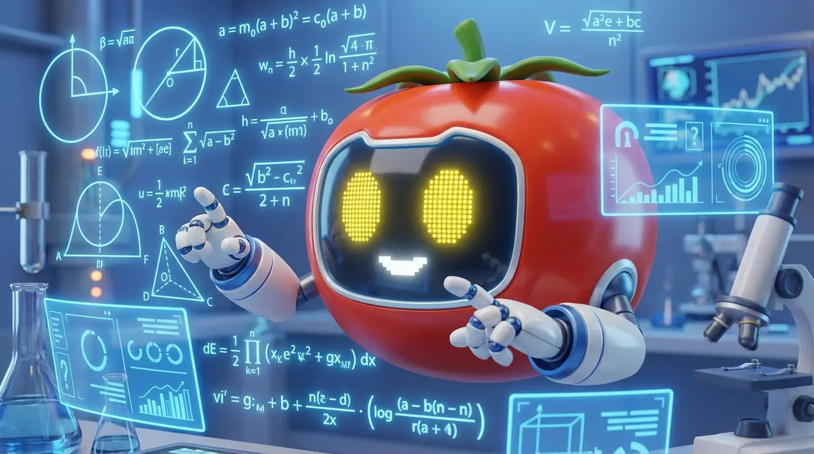
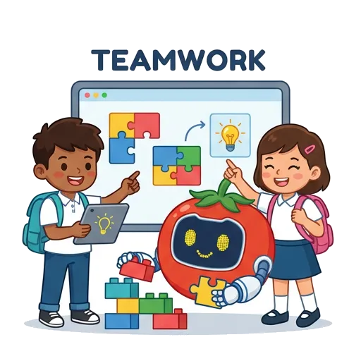
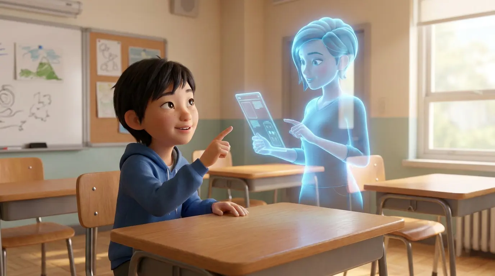
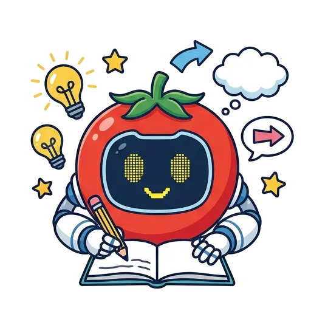
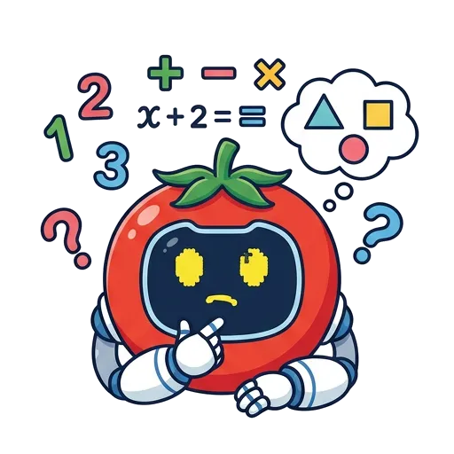
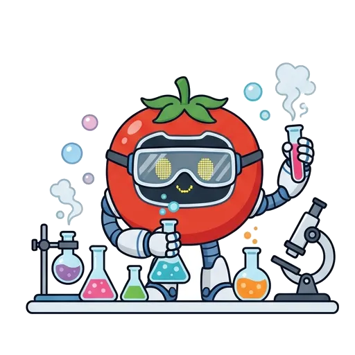
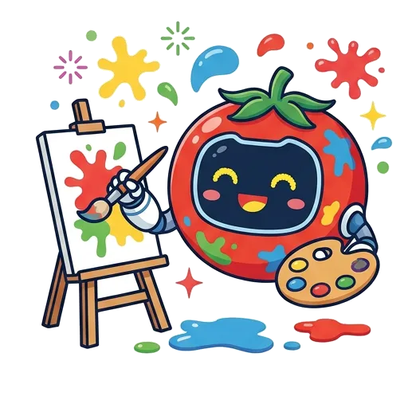
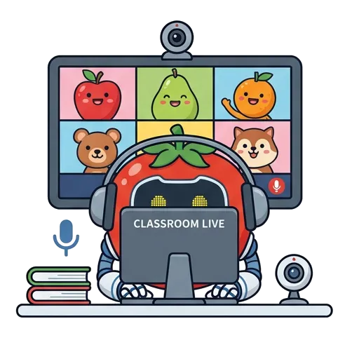
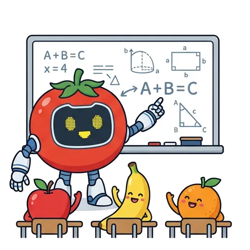
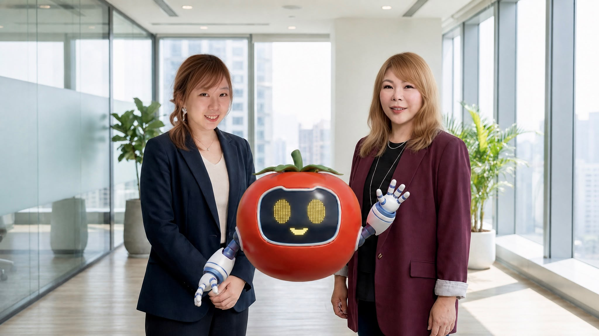

Our Vision
ChopReality 以 AI 重塑學習體驗，致力為香港每一位學生打造更高效、更有趣、更個人化的學習方式。透過具象化 AI 數字人，成為學生全天候的學習夥伴，激發學習動機、強化理解能力，並培養自主思考與成長型思維。
我們相信，科技不只是工具，而是推動教育升級的核心力量，讓學習更智慧、更具溫度。
了解更多關於我們Introduction Video
從數字人對話到教學後台，看看課堂實際運作的樣子
Why ChopReality
相比市面上碎片化的教育軟體或缺乏本地化教學設計的通用 AI，ChopReality 提供一站式閉環支援
| 比較維度 | ⭐️ ChopReality AI (專為教育而設的教學生態平台) |
通用 AI 工具 / 碎片化軟體 (ChatGPT, Gemini, 傳統教具) |
|---|---|---|
| 對話引擎與引導 | ✓獨家情境式「引導式問答」 主動提問啟發思考，解決學生「無話可說」窘境 |
❌ 純文字被動應答 學生不知從何問起，互動流於淺層回答 |
| 門檻與創建成本 | ✓5分鐘零代碼自定義 一站式整合，可自由餵養校本 PDF/網址，快速生成 3D 數字人 |
❌ 需切換多個工具/編寫提示詞 工具分散，開發定制費用高昂且難以維護 |
| 教學追蹤與透明度 | ✓專屬「教學指揮艙」後台 實時呈現思維自主指數、知識覆蓋地圖與獨家「卡關預警」 |
❌ 「成效黑盒」無後台 無法掌握學生對話質量、偏離主題或學習盲區 |
| 評測與考評貼合度 | ✓布魯姆認知層級 (Bloom's) 自動出題 精準貼合香港考評局建議，AI 輔助主觀題與作文批改 |
❌ 缺乏本地考評機制 無法自動生成階梯式試題或進行結構化批改 |
| SEN 特殊教育與共融 | ✓100% 寬容度重複練習環境 廣東話語音對話，無失敗壓力，支援 ASD 社交與 ADHD 常規練習 |
❌ 無共融與情緒設計 對文字輸入要求高，缺乏無壓力的重覆社交情境 |
For Teachers & Students

可視化一站式操作，徹底打通教與學閉環

AI FOR ALL SUBJECT
從中文寫作到科學實驗，同一套數字人與後台，讓各科老師都能即接即用

引導式提問拓展選材與論點，AI 輔助作文批改與修訂建議。

拆解解題步驟，逐層提問找出卡關位置，而非直接給答案。

實驗前後的概念澄清與推論練習，建立探究式學習習慣。

從靈感收集到作品述評，讓學生說得出自己的創作想法。
廣東話語音對話配合聆辨練習，輕鬆建立樂理基礎。

遠程上課也能跟足對話進度，後台同步記錄學習輸出。
以校本教材為知識庫，隨時提問驗證理解程度。
從提問到資料整理，陣伴學生完成專題報告全過程。
每一個孩子都有獨特的學習步伐。ChopReality 提供 100% 寬容度的互動環境，專為 ASD 自閉症及 ADHD 學生打造。
How It Works

數據驅動教與學，持續優化個人化學習路徑
自訂角色外觀與性格，餵養校本教材，建立專屬知識檔案。
情境式引導提問，進行多輪互動對話，啟發學生自主思考。
對應記憶至創造六大層級，自動批改生成個人診斷報告。
追蹤思維自主指數與知識覆蓋地圖，推送精準教學策略。
Academic Endorsement
FAQ
解答學校、主任與老師最關心的引進細節
聯絡 ChopReality 團隊，預約專屬校園試用與優質教育基金 (QEF) 申請對接方案。

ChopReality 創辦團隊與吉祥物機器人